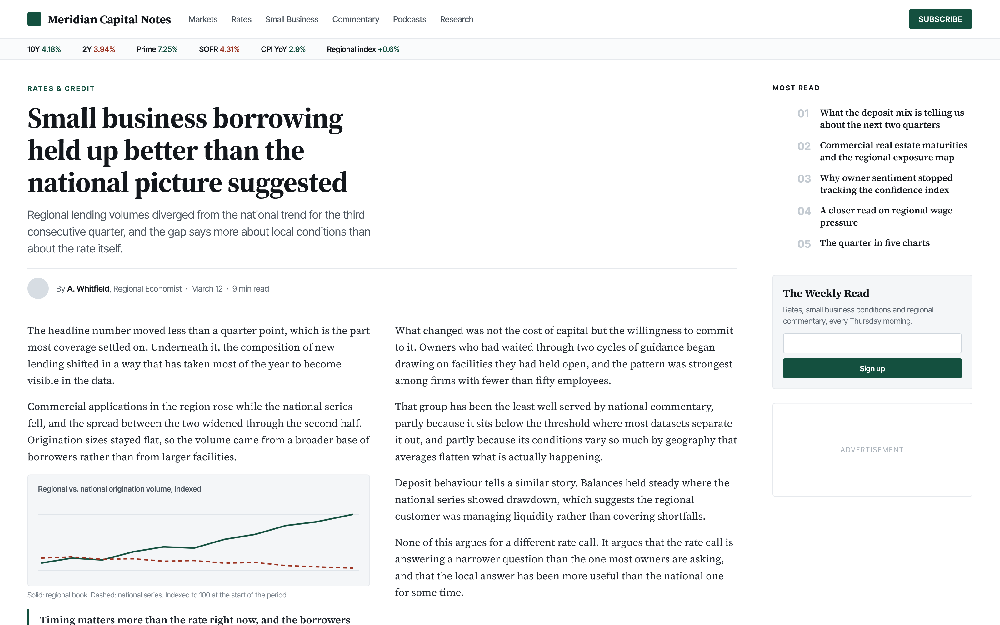

A full library. An empty calendar.
A large U.S. regional bank published across four business lines, constantly. But its social team had no way to decide what to post month-to-month.
Social and editorial lived side by side.
While a content-rich site supported four distinct business lines and their audiences, the two spaces lived in silos. The marketing manager wanted her content to work harder for the business.
More content than almost anyone in the category, and no idea what to post next week.
Podcasts, market commentary, small business guidance, long-form web content, published constantly across four business lines: there was no shortage of meaningful content. But a busy social manager doesn't have time to sift that inventory for what's immediately postable.

But publishing isn't programming.
No mechanism existed to turn what they had into a cadence they could sustain.
The majority of content-heavy organizations have a similar problem.
Social managers are drinking from a firehose. Too often, nobody owns the step between the two: content teams produced assets, social teams filled a calendar, and everything published is promoted for a day and then treated as done. Evergreen content collects dust.
The result is an organization that is content-rich and social-starved. No distribution plan takes into account the realities of the audience needs.
What's in the content inventory?
The monthly question stopped being what should we post and became what do we already have, and what does it break into.
The matrix is the conversion step nobody owned: written down, repeatable, and runnable by someone other than its author.

One podcast episode, four formats, mapped to the pillar each one serves.
Audiograms are a distribution tactic, not a strategy: clipped audio, captioned, packaged as video so platforms treat it as video rather than a static post.

The matrix answers what we can make. It doesn't answer what deserves to be made this week.
That was the judgment layer, and it's the part that's hard to hire for. Every week: reading what was actually happening in rates, in small business conditions, in the regional economy, then identifying which of it genuinely mattered to which pillar's audience right now, and whether the bank had the standing to speak on it.
I was brought onto their next major campaign rollout to help build its messaging matrix. Repurposing isn't chucking content into a mill. It's retro-applying strategy to content that had a purpose but not an overall messaging strategy.
It matters to that pillar's audience, now, not in general.
It's happening this week, not last quarter.
The bank has standing to say it, and saying it costs nothing in trust.
All three required. Two out of three is a post nobody needed.
The goal was never engagement. It was for four different audiences to come to treat this bank as a reliable guide.
What I'd do differently today
Name the layer that was already working.
The weekly recommendations were already a Hub layer, the recurring series that keeps a feed alive week to week. Nobody named it that, so nobody could see what sat either side of it. Across all four business lines the pattern was identical: Hub was running, Hero fired only when something in the market forced it rather than on a plan, and Help, the always-on answers to the questions customers actually arrive with, was thin everywhere.
Added in hindsight, not shipped work. Hero-Hub-Help was developed by Google for YouTube.